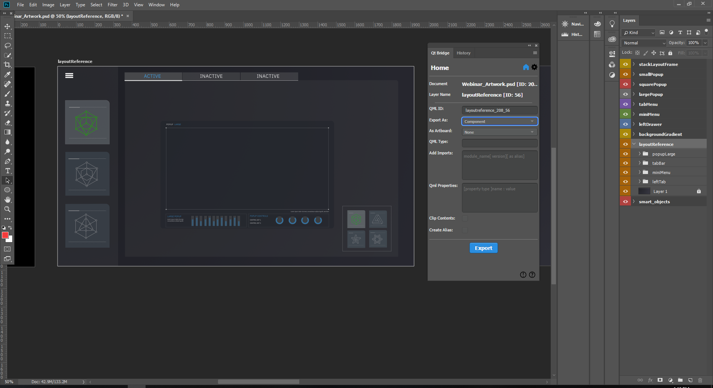
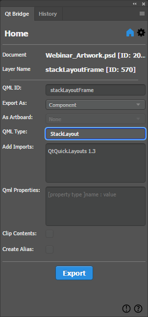
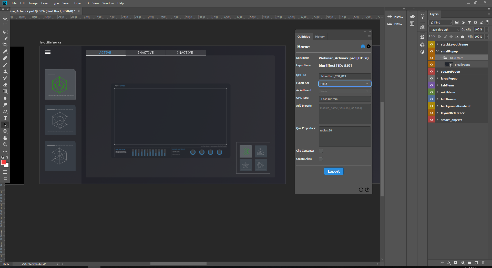
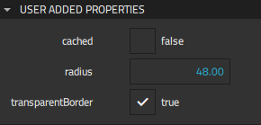
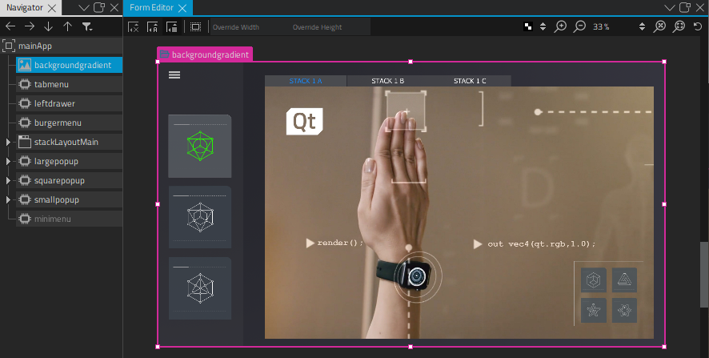
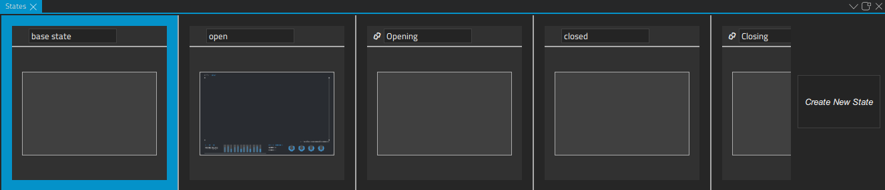
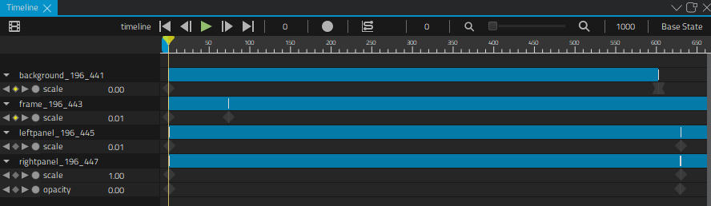

Webinar Demo
Contains sources for the From Photoshop to Prototype video tutorial.
Webinar Demo contains the source files for the From Photoshop to Prototype with Qt Design Studio webinar that shows how to export designs from Adobe Photoshop to Qt Design Studio and to edit them to create a UI.
The following sections describe some of the main points of the webinar. Select the Tutorials tab to watch the webinar video for the full details.
Exporting from Adobe Photoshop
We use Adobe Photoshop to design our application and Qt Bridge to export our design to Qt Design Studio as PNG images and custom components.
Before we can begin, we must set up Qt Bridge as instructed in Exporting Designs from Adobe Photoshop.
We organize our design in Photoshop using artboards as instructed in Organizing Assets.
Qt Bridge automatically proposes identifiers for all groups and layers. The IDs will be used as filenames in Qt Design Studio. We want to change some of them in the ID field, so that we can easily find them in Qt Design Studio. We must keep in mind that the IDs must be unique, that they must begin with a lower-case letter or an underscore character, and that only letters, numbers, and underscore characters are allowed.
Each artboard is exported automatically as a component. That is, a separate file that contains all the artwork on the artboard. We determine whether each group or layer is exported as a component or a child item. Child items will be exported as PNG files, with references to them in the component file that contains them.
We can export some components as components that provide the functionality that we want. To use the components in Qt Design Studio, we need to add import statements that pull in the modules that contain the components. We can even specify properties for the components to export, so that we won't have to do that in Qt Design Studio.
Creating a Reference Image

We want to create a reference image of the UI that has no functionality, but shows all the UI controls as we designed them in Adobe Photoshop. We design all the controls visible on the layoutReference separately on other artboards, and therefore we can select Merged in the Export As field to merge them all into one image when this artboard is exported.
Creating the UI Main Page
We want to use the backgroundGradient artboard as the main page of the UI. Initially, it will contain a gradient image that we will build the UI on in Qt Design Studio.
We set the gradient image on the artboard to Child in the Export As field to export it as a PNG file that is referred to from the main page.
Using Stack Layout

For the stackLayoutFrame layer, we want to use a StackLayout component, which provides a stack of items where only one item is visible at a time. In the Component field, we enter StackLayout.
To be able to use the component, we enter the statement that imports the Qt Quick Layouts module, which contains the component, in the Imports field: QtQuick.Layouts 1.3.
We will add content to the stack layout in Qt Design Studio.
Using Qt Studio Effects
Note: The availability of effects depends on whether you select Qt 5 or Qt 6 when creating your project in Qt Design Studio.

We want to apply the Fast Blur effect to the smallPopup UI control. In the artboard, we have a blurEffect layer that we want to export as a FastBlurItem component. In the Component field, we enter FastBlurItem.
To be able to use the component, we added the statement that imports the Qt Quick Studio Effects module: QtQuick.Studio.Effects 1.0.
We specify that the component to which we want to apply the effect is a child of the effect. We then specify the radius property for the effect, in the Properties field. We can modify the property in Qt Design Studio by opening the SmallPopup.ui.qml file and selecting the instance of the Fast Blur Item component in Navigator. We can find the property in Properties > Geometry- 2D > Radius.

Creating a Menu with Reusable Buttons
The miniMenu artboard contains menu buttons that we will use to toggle popup dialogs in the UI. We want to be able to reuse the buttons and to change their appearance depending on whether they are on or off. Therefore, we select Component in the Export As field for each button to export them as separate components that we can modify in Qt Design Studio.
Within the artboard, we export each icon as a child and the background as merged. This merges the background art together while it keeps the icons separate, so that we can switch the icons depending on the state of the button. We will implement this functionality in Qt Design Studio.
Preparing for Animation
We want to animate the contents of the largePopup artboard in Qt Design Studio, so we export each group and layer as a child.
Exporting Our Design
When we have specified settings for all the artboards and the groups and layers in them, we select Export to copy the assets and metadata to the export path we specified.
Importing Our Design
After using Qt Bridge in Adobe Photoshop to export our design, we import it into a project that we create in Qt Design Studio, as instructed in Importing Designs.
If we need to make changes in Photoshop later and export our design again, Qt Design Studio will try to merge our changes during the import, so that none of the changes we mage in Qt Design Studio are lost.
Using Imported Components
The LayoutReference.ui.qml file contains a reference image of the UI we will create. We use the imported components to create the UI in the MainApp.ui.qml file. The imported components are listed in Components > My Components, and we can drag-and-drop them to the 2D view.

To view the structure of a particular component, we right-click it in the 2D view and select Go into Component in the context menu. Any changes we make to a component are immediately visible in all the other components where it appears.
We can view the code for each component in the Code view.
We can now use states and the timeline to animate the components in the UI.
Animating Components
We open the Largepopup.ui.qml file in the Design mode to add animation to it. In the States view, we add the opening, open, closing, and closed states for the popup.

For more information about using states, see Creating States.
We then use the Timeline view to add animations that are run when moving from one state to another.

For more information about using the timeline, see Creating Timeline Animations.